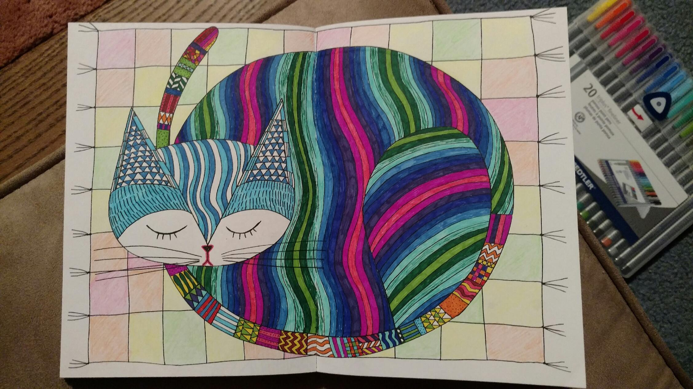
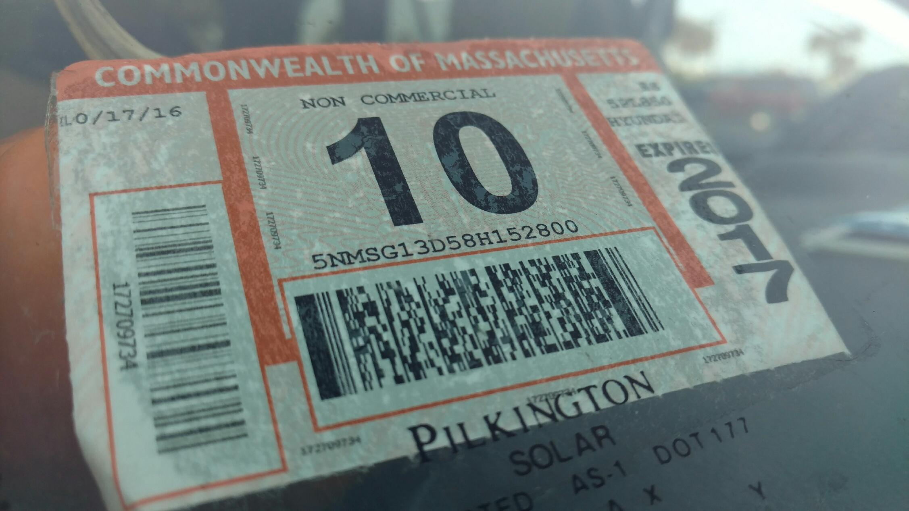

Hello from beautiful Tennessee! Once again, it appears I'm not so great at keeping up with this blog... but I've had quite a few people ask me to 'keep it going', so it's time for some back-logging!
After leaving Buffalo, we remembered that New York is yuuuge. So we stopped at a Wal-Mart somewhere in the Syracuse area for the evening to sleep, and headed back for beautiful Massachusetts in the morning! We sadly passed up a few different routes to the Adirondacks... but we'll get there!
It's funny, when we passed the state line into Massachusetts, things just felt different. We passed through familiar (and unfamiliar) parts of the Berkshires, like Jiminy Peak and Wildwood. We were too soon for the Paradise Tattoo Gathering hosted by my friends at TattooNOW, but we drove through Ashfield just in time for the Ashfield Fall Festival! The leaves were in peak and the sun was shining, it looked like a great time... but we had friends to go see!
And friends we saw, upon returning to lovely South Deerfield! My cousin Jon and his girlfriend Caitlin (and their roommate Becky!) were kind enough to host us (in their driveway... our preference) for a few days! We also got to catch up with our old friend Brend over a nice, friendly game of angry cards. We also got to say hello to our old friend, marijuana... sorry mom(s)! To follow up that treat, we grabbed Antonio's for dinner. Man, did we miss the Valley.
We also missed CATS!!!!
Duchess, the princess of the house

And Merry, the queen regent herself!
We also got our Civ fix. And got to celebrate Caitlin's birthday with some pancake breakfast! What a joyous few days. But it was time for us to head home and unload some of our surplus stuff, and more importantly: see my momma!
Back in Bolton, things quieted down a bit. My mom/stepdad's house had made a lot of progress, but was definitely looking more "in progress" than the untouched, old house we had left. We spent an evening with my grandmother, for her birthday (day-twins with Caitlin!), and I headed into Boston for a night to catch up with my dudes Nick, Varun, and Sam (happy birthday Toots! apparently January is a popular time to get freaky...)
We helped my mom with her renovations, spending an afternoon removing a washer-dryer combo from a tiny nook in the downstairs bathroom. Man, did that thing put up a fight, but it was no match for our combined efforts! In its place went a lovely little shelf.
After a week back in Massachusetts, we were all set to head out once more. But it was not meant to be. We had taken our beautiful Santi to Mitchell Motors, right down the street from my mom's, for some routine service, and were ready to address some outstanding issues when we got down to Lacey's mom's in New Jersey. But we realized--the inspection sticker would expire in December, and we wouldn't be back in the state until 2017! We had left some things at Jon and Caitlin's, though, and decided to get our car inspected out in Western MA again.
What a mistake that was.
We failed the safety portion of our inspection, and Santi was deemed unfit to drive. The modifications we had made in the backseat were considered unsafe by our douche of an inspection mechanic, and the tires we were going to get in New Jersey needed to be put on sooner. So... it was back to Bolton, damning our plans with friends in New York and New Jersey.
Thankfully, that gave us time to work on these pieces of art. What a sleepy kit!

Oh, we are just sassy feesh...
Infinite thanks to Dick Mitchell of Mitchell Motors, who quickly and conveniently got the car back in driving condition in a few days (we had to wait like 4 days for a very specific reflector light...) Seriously, if you're in the Bolton area and need a tune-up or even more complex work, go to this guy. He is one professional, honest, and hard-working dude. And tons of thanks to Peter for recommending him!
ROAD SAFE, MOTHA FUCKA!
With the car finally squared away, we repaired our plans with friends from NYC, and struck out once more...
Thanks for reading, and stay tuned for more!
Mileage: 3800
Weather: Rainy, windy, chilly 55F
Currently listening to: Nujabes - Spiritual State